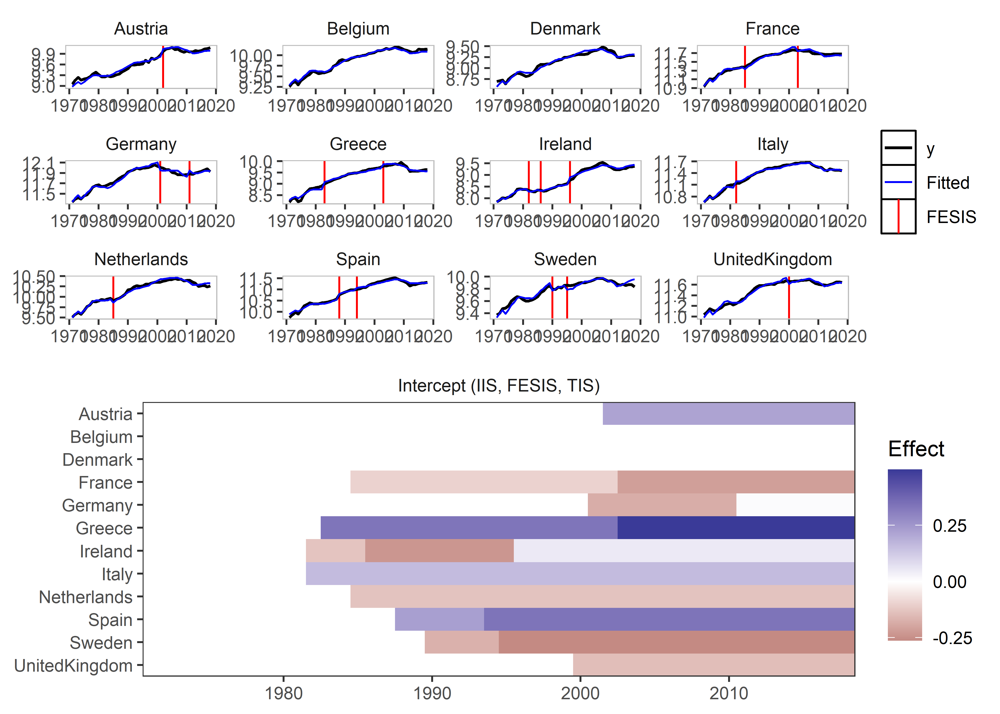
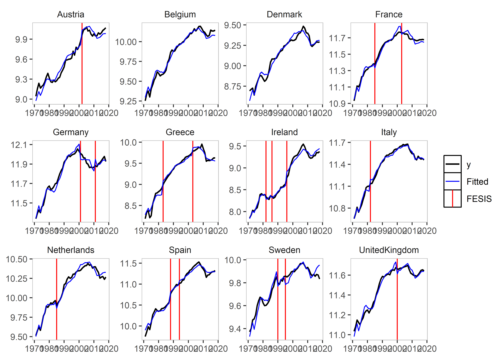
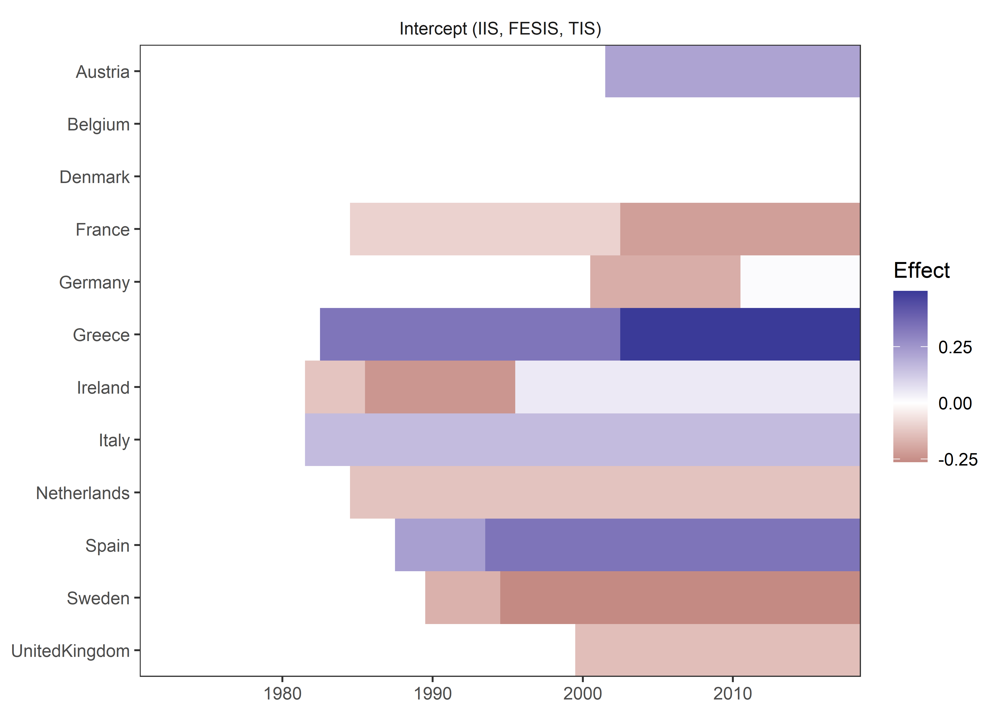
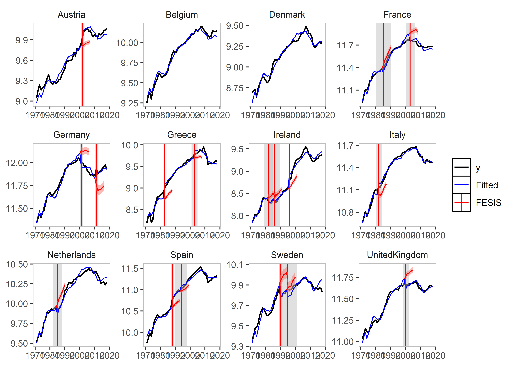
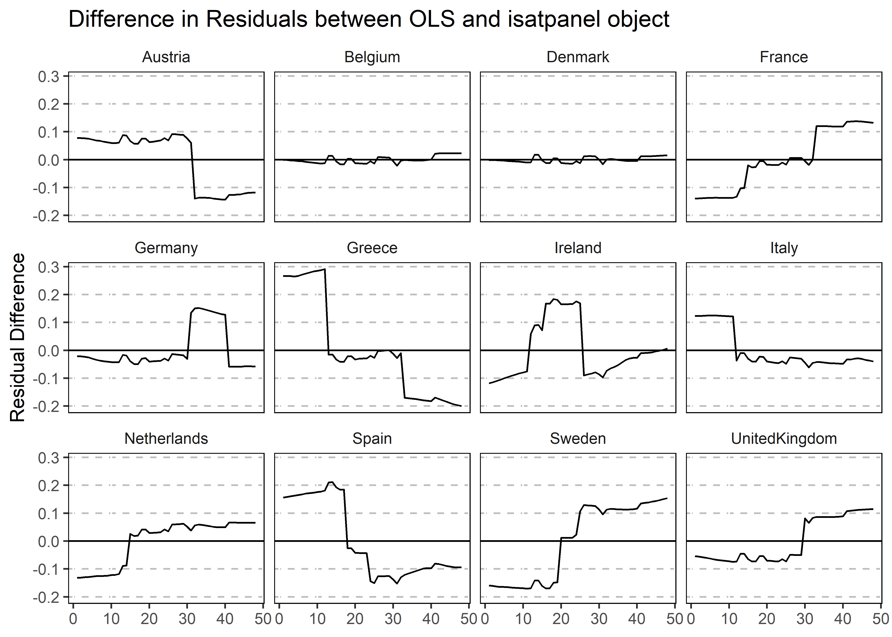
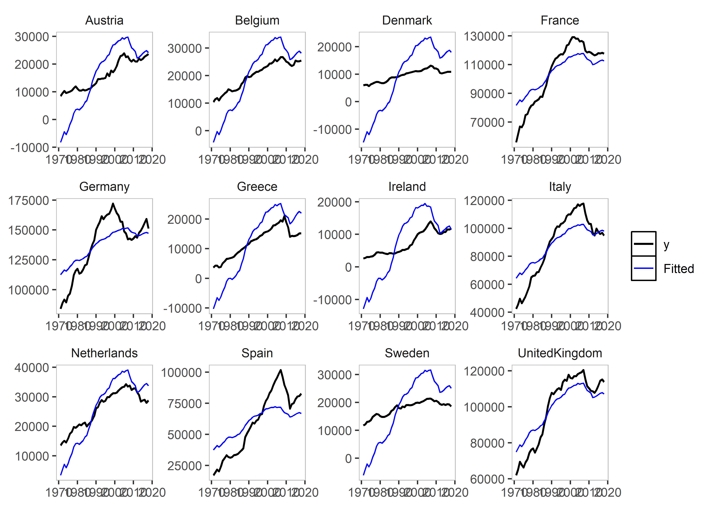
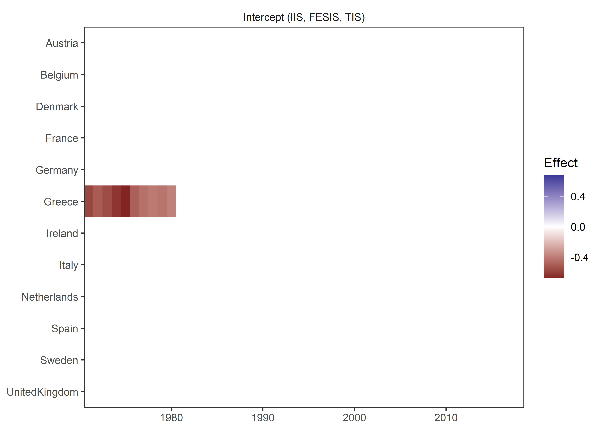
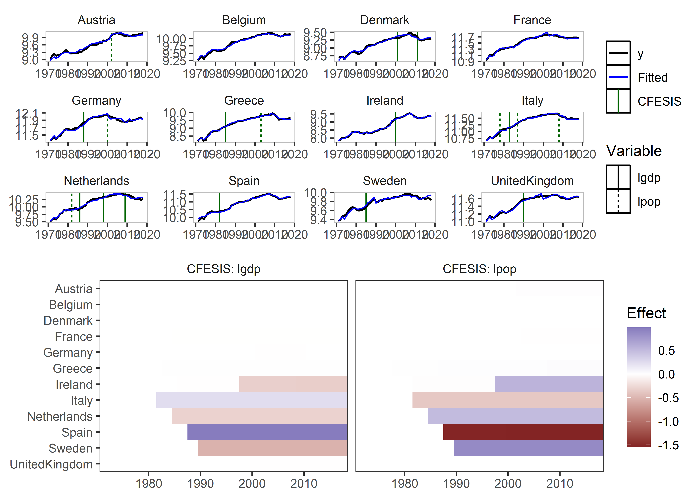
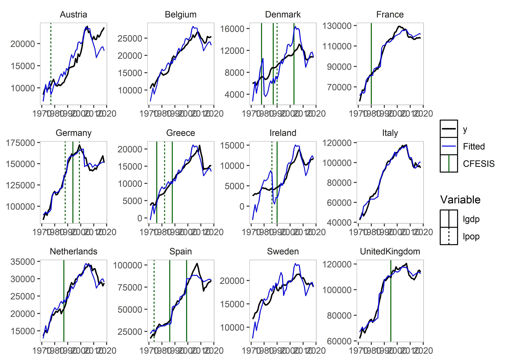

The package is a panel adaptation of the gets package see here.
This code is being developed by Felix Pretis and Moritz Schwarz. The associated working paper is published under “Panel Break Detection: Detecting Unknown Treatment, Stability, Heterogeneity, and Outliers” by Pretis and Schwarz, which is available at SSRN here and was applied to a study by Nico Koch and colleagues on EU Road CO2 emissions, which was published in Nature Energy in 2022.
Installation
You can install the released version of getspanel from CRAN with:
install.packages("getspanel")And the development version from GitHub with:
# install.packages("devtools")
devtools::install_github("moritzpschwarz/getspanel")Example
library(getspanel)
Warning: package 'getspanel' was built under R version 4.5.3
data("EU_emissions_road")
# let's subset a few countries to make this faster
subset <- c("Austria", "Belgium", "Germany", "Denmark", "Spain",
"France", "Greece", "Ireland", "Italy", "Netherlands", "Sweden", "United Kingdom")
EU_emissions_road <- EU_emissions_road[EU_emissions_road$country %in% subset, ]
is1 <- isatpanel(data = EU_emissions_road,
formula = ltransport.emissions ~ lgdp + lpop,
index = c("country","year"),
effect = "twoways",
fesis = TRUE,
print.searchinfo = FALSE # to save space we suppress the status information in the estimation
)
is1
Date: Wed Oct 7 10:14:17 2026
Dependent var.: y
Method: Ordinary Least Squares (OLS)
Variance-Covariance: Ordinary
No. of observations (mean eq.): 576
Sample: 1 to 576
SPECIFIC mean equation:
coef std.error t-stat p-value
lgdp 0.191984 0.048508 3.9578 8.665e-05 ***
lpop 1.661090 0.146926 11.3056 < 2.2e-16 ***
idBelgium -0.150522 0.032887 -4.5769 5.966e-06 ***
idDenmark 0.280623 0.057795 4.8555 1.610e-06 ***
idFrance -1.630424 0.234931 -6.9400 1.226e-11 ***
idGermany -1.976952 0.278236 -7.1053 4.178e-12 ***
idGreece -0.925506 0.039916 -23.1863 < 2.2e-16 ***
idIreland 0.652538 0.094434 6.9100 1.488e-11 ***
idItaly -1.952354 0.240815 -8.1073 4.048e-15 ***
idNetherlands -0.559940 0.071258 -7.8579 2.429e-14 ***
idSpain -1.817624 0.198185 -9.1714 < 2.2e-16 ***
idSweden 0.163796 0.017434 9.3951 < 2.2e-16 ***
idUnitedKingdom -1.694515 0.241823 -7.0073 7.932e-12 ***
time1971 -22.266234 1.712374 -13.0031 < 2.2e-16 ***
time1972 -22.209745 1.712719 -12.9675 < 2.2e-16 ***
time1973 -22.166745 1.712937 -12.9408 < 2.2e-16 ***
time1974 -22.234614 1.713418 -12.9768 < 2.2e-16 ***
time1975 -22.182121 1.714008 -12.9417 < 2.2e-16 ***
time1976 -22.114917 1.714213 -12.9009 < 2.2e-16 ***
time1977 -22.067555 1.714529 -12.8709 < 2.2e-16 ***
time1978 -22.008915 1.714788 -12.8348 < 2.2e-16 ***
time1979 -22.000682 1.715010 -12.8283 < 2.2e-16 ***
time1980 -22.019270 1.715388 -12.8363 < 2.2e-16 ***
time1981 -22.033913 1.715851 -12.8414 < 2.2e-16 ***
time1982 -22.031766 1.715724 -12.8411 < 2.2e-16 ***
time1983 -22.044801 1.714897 -12.8549 < 2.2e-16 ***
time1984 -22.026822 1.714883 -12.8445 < 2.2e-16 ***
time1985 -21.986600 1.713680 -12.8300 < 2.2e-16 ***
time1986 -21.937925 1.713782 -12.8009 < 2.2e-16 ***
time1987 -21.918101 1.713835 -12.7889 < 2.2e-16 ***
time1988 -21.886703 1.713439 -12.7736 < 2.2e-16 ***
time1989 -21.857159 1.713514 -12.7558 < 2.2e-16 ***
time1990 -21.825409 1.713532 -12.7371 < 2.2e-16 ***
time1991 -21.806648 1.714060 -12.7222 < 2.2e-16 ***
time1992 -21.783408 1.714627 -12.7045 < 2.2e-16 ***
time1993 -21.779781 1.715239 -12.6978 < 2.2e-16 ***
time1994 -21.785776 1.715018 -12.7029 < 2.2e-16 ***
time1995 -21.776892 1.715203 -12.6964 < 2.2e-16 ***
time1996 -21.771196 1.714708 -12.6967 < 2.2e-16 ***
time1997 -21.773890 1.714776 -12.6978 < 2.2e-16 ***
time1998 -21.736594 1.714849 -12.6755 < 2.2e-16 ***
time1999 -21.726690 1.714930 -12.6691 < 2.2e-16 ***
time2000 -21.714010 1.715121 -12.6603 < 2.2e-16 ***
time2001 -21.691526 1.715842 -12.6419 < 2.2e-16 ***
time2002 -21.701688 1.716518 -12.6429 < 2.2e-16 ***
time2003 -21.698606 1.717274 -12.6355 < 2.2e-16 ***
time2004 -21.694719 1.717785 -12.6295 < 2.2e-16 ***
time2005 -21.702992 1.718411 -12.6297 < 2.2e-16 ***
time2006 -21.708115 1.718955 -12.6287 < 2.2e-16 ***
time2007 -21.713375 1.719622 -12.6268 < 2.2e-16 ***
time2008 -21.755859 1.720512 -12.6450 < 2.2e-16 ***
time2009 -21.787691 1.721588 -12.6556 < 2.2e-16 ***
time2010 -21.815245 1.722005 -12.6685 < 2.2e-16 ***
time2011 -21.864707 1.722959 -12.6902 < 2.2e-16 ***
time2012 -21.925951 1.723473 -12.7220 < 2.2e-16 ***
time2013 -21.929240 1.723956 -12.7203 < 2.2e-16 ***
time2014 -21.933833 1.724324 -12.7202 < 2.2e-16 ***
time2015 -21.933998 1.724608 -12.7183 < 2.2e-16 ***
time2016 -21.929212 1.725103 -12.7118 < 2.2e-16 ***
time2017 -21.938441 1.725461 -12.7145 < 2.2e-16 ***
time2018 -21.951538 1.725811 -12.7195 < 2.2e-16 ***
fesisAustria.2002 0.217753 0.016521 13.1802 < 2.2e-16 ***
fesisGermany.2001 -0.182226 0.019828 -9.1902 < 2.2e-16 ***
fesisGermany.2011 0.192494 0.026512 7.2606 1.492e-12 ***
fesisSpain.1988 0.228834 0.025115 9.1115 < 2.2e-16 ***
fesisSpain.1994 0.109825 0.024273 4.5246 7.575e-06 ***
fesisFrance.1985 -0.099240 0.020099 -4.9377 1.081e-06 ***
fesisFrance.2003 -0.115748 0.018391 -6.2938 6.801e-10 ***
fesisUnitedKingdom.2000 -0.144022 0.016374 -8.7958 < 2.2e-16 ***
fesisGreece.1983 0.336377 0.024504 13.7273 < 2.2e-16 ***
fesisGreece.2003 0.161829 0.018121 8.9305 < 2.2e-16 ***
fesisIreland.1982 -0.129324 0.031035 -4.1671 3.637e-05 ***
fesisIreland.1986 -0.106019 0.030918 -3.4290 0.0006560 ***
fesisIreland.1996 0.285148 0.028979 9.8397 < 2.2e-16 ***
fesisItaly.1982 0.159975 0.018763 8.5259 < 2.2e-16 ***
fesisNetherlands.1985 -0.131479 0.019114 -6.8785 1.821e-11 ***
fesisSweden.1990 -0.172648 0.026939 -6.4088 3.404e-10 ***
fesisSweden.1995 -0.090674 0.025941 -3.4954 0.0005157 ***
---
Signif. codes: 0 '***' 0.001 '**' 0.01 '*' 0.05 '.' 0.1 ' ' 1
Diagnostics and fit:
Chi-sq df p-value
Ljung-Box AR(1) 255.88 1 < 2.2e-16 ***
Ljung-Box ARCH(1) 124.08 1 < 2.2e-16 ***
---
Signif. codes: 0 '***' 0.001 '**' 0.01 '*' 0.05 '.' 0.1 ' ' 1
SE of regression 0.04926
R-squared 0.99815
Log-lik.(n=576) 955.86760
plot(is1)
Let’s explore the other plots that we can use:
plot_grid(is1)
We can plot the counterfactuals as well:
plot_counterfactual(is1, plus_t = 5)
We can plot the residuals against an OLS model:
plot_residuals(is1)
An example using coefficient step indicator saturation and impulse indicator saturation:
is2 <- isatpanel(data = EU_emissions_road,
formula = ltransport.emissions ~ lgdp + lpop,
index = c("country","year"),
effect = "twoways",
csis = TRUE,
iis = TRUE,
print.searchinfo = FALSE # to save space we suppress the status information in the estimation
)
is2
Date: Wed Oct 7 10:16:38 2026
Dependent var.: y
Method: Ordinary Least Squares (OLS)
Variance-Covariance: Ordinary
No. of observations (mean eq.): 576
Sample: 1 to 576
SPECIFIC mean equation:
coef std.error t-stat p-value
lgdp 0.480076 0.057505 8.3484 6.688e-16 ***
lpop 1.102095 0.201437 5.4712 7.048e-08 ***
idBelgium -0.145658 0.047862 -3.0433 0.0024618 **
idDenmark 0.010816 0.079617 0.1359 0.8919901
idFrance -1.249756 0.328865 -3.8002 0.0001622 ***
idGermany -1.443445 0.376986 -3.8289 0.0001449 ***
idGreece -0.371161 0.071474 -5.1929 3.007e-07 ***
idIreland 0.386181 0.116254 3.3219 0.0009589 ***
idItaly -1.321369 0.326088 -4.0522 5.874e-05 ***
idNetherlands -0.578138 0.105033 -5.5044 5.903e-08 ***
idSpain -1.128038 0.279220 -4.0400 6.178e-05 ***
idSweden -0.070651 0.024952 -2.8314 0.0048189 **
idUnitedKingdom -1.238038 0.330535 -3.7456 0.0002007 ***
time1971 -20.768078 2.256368 -9.2042 < 2.2e-16 ***
time1972 -20.728114 2.256497 -9.1860 < 2.2e-16 ***
time1973 -20.693515 2.256352 -9.1712 < 2.2e-16 ***
time1974 -20.758251 2.256698 -9.1985 < 2.2e-16 ***
time1975 -20.700178 2.257571 -9.1692 < 2.2e-16 ***
time1976 -20.657978 2.257342 -9.1515 < 2.2e-16 ***
time1977 -20.620444 2.257401 -9.1346 < 2.2e-16 ***
time1978 -20.571088 2.257415 -9.1127 < 2.2e-16 ***
time1979 -20.568553 2.257282 -9.1121 < 2.2e-16 ***
time1980 -20.592616 2.257574 -9.1216 < 2.2e-16 ***
time1981 -20.637430 2.257528 -9.1416 < 2.2e-16 ***
time1982 -20.634405 2.257739 -9.1394 < 2.2e-16 ***
time1983 -20.622710 2.257725 -9.1343 < 2.2e-16 ***
time1984 -20.611186 2.257451 -9.1303 < 2.2e-16 ***
time1985 -20.596647 2.257167 -9.1250 < 2.2e-16 ***
time1986 -20.562357 2.256992 -9.1105 < 2.2e-16 ***
time1987 -20.548213 2.256834 -9.1049 < 2.2e-16 ***
time1988 -20.507389 2.256370 -9.0887 < 2.2e-16 ***
time1989 -20.486237 2.256133 -9.0802 < 2.2e-16 ***
time1990 -20.474918 2.256273 -9.0747 < 2.2e-16 ***
time1991 -20.458219 2.256869 -9.0649 < 2.2e-16 ***
time1992 -20.435620 2.257574 -9.0520 < 2.2e-16 ***
time1993 -20.428974 2.258481 -9.0454 < 2.2e-16 ***
time1994 -20.432759 2.258439 -9.0473 < 2.2e-16 ***
time1995 -20.438540 2.258330 -9.0503 < 2.2e-16 ***
time1996 -20.414389 2.258354 -9.0395 < 2.2e-16 ***
time1997 -20.425825 2.258092 -9.0456 < 2.2e-16 ***
time1998 -20.397145 2.257843 -9.0339 < 2.2e-16 ***
time1999 -20.396400 2.257580 -9.0346 < 2.2e-16 ***
time2000 -20.405635 2.257344 -9.0397 < 2.2e-16 ***
time2001 -20.402260 2.257728 -9.0366 < 2.2e-16 ***
time2002 -20.396216 2.258378 -9.0314 < 2.2e-16 ***
time2003 -20.390618 2.259102 -9.0260 < 2.2e-16 ***
time2004 -20.392060 2.259545 -9.0249 < 2.2e-16 ***
time2005 -20.403177 2.260237 -9.0270 < 2.2e-16 ***
time2006 -20.414627 2.260682 -9.0303 < 2.2e-16 ***
time2007 -20.424333 2.261361 -9.0319 < 2.2e-16 ***
time2008 -20.462583 2.262676 -9.0435 < 2.2e-16 ***
time2009 -20.479077 2.264676 -9.0428 < 2.2e-16 ***
time2010 -20.508758 2.265126 -9.0541 < 2.2e-16 ***
time2011 -20.542655 2.265483 -9.0677 < 2.2e-16 ***
time2012 -20.599286 2.266329 -9.0893 < 2.2e-16 ***
time2013 -20.600458 2.267034 -9.0870 < 2.2e-16 ***
time2014 -20.608280 2.267379 -9.0890 < 2.2e-16 ***
time2015 -20.616047 2.267439 -9.0922 < 2.2e-16 ***
time2016 -20.613900 2.267971 -9.0891 < 2.2e-16 ***
time2017 -20.628101 2.268232 -9.0944 < 2.2e-16 ***
time2018 -20.645403 2.268513 -9.1009 < 2.2e-16 ***
iis337 -0.571395 0.110397 -5.1758 3.280e-07 ***
iis338 -0.502695 0.110864 -4.5343 7.225e-06 ***
iis339 -0.555516 0.111172 -4.9969 8.043e-07 ***
iis340 -0.627122 0.110357 -5.6827 2.244e-08 ***
iis341 -0.675722 0.110746 -6.1016 2.093e-09 ***
iis342 -0.489231 0.110602 -4.4234 1.191e-05 ***
iis343 -0.435945 0.110332 -3.9512 8.882e-05 ***
iis344 -0.404908 0.110429 -3.6667 0.0002718 ***
iis345 -0.422950 0.110172 -3.8390 0.0001392 ***
iis346 -0.382619 0.109944 -3.4801 0.0005446 ***
---
Signif. codes: 0 '***' 0.001 '**' 0.01 '*' 0.05 '.' 0.1 ' ' 1
Diagnostics and fit:
Chi-sq df p-value
Ljung-Box AR(1) 475.51 1 < 2.2e-16 ***
Ljung-Box ARCH(1) 336.05 1 < 2.2e-16 ***
---
Signif. codes: 0 '***' 0.001 '**' 0.01 '*' 0.05 '.' 0.1 ' ' 1
SE of regression 0.10295
R-squared 0.99181
Log-lik.(n=576) 527.71075
plot(is2)
plot_grid(is2)
and an example of Coefficient Fixed-Effect Step indicator saturation:
is3 <- isatpanel(data = EU_emissions_road,
formula = ltransport.emissions ~ lgdp + lpop,
index = c("country","year"),
effect = "twoways",
cfesis = TRUE,
print.searchinfo = FALSE # to save space we suppress the status information in the estimation
)
is3
plot(is3)
We can also use e.g. the fixest package to estimate our models:
is4 <- isatpanel(data = EU_emissions_road,
formula = ltransport.emissions ~ lgdp + lpop,
index = c("country","year"),
effect = "twoways",
engine = "fixest",
fesis = TRUE,
print.searchinfo = FALSE # to save space we suppress the status information in the estimation
)
plot(is4)